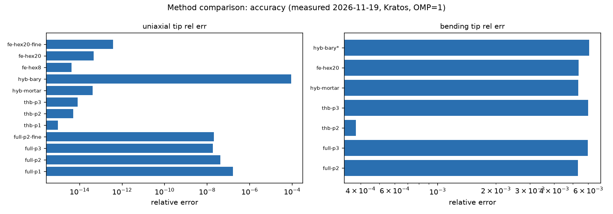
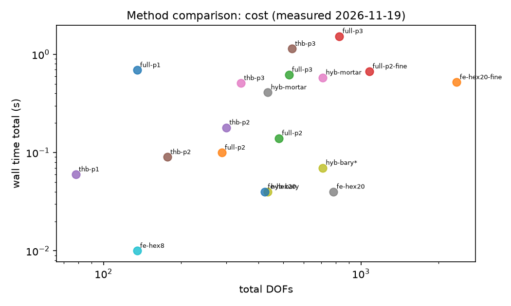
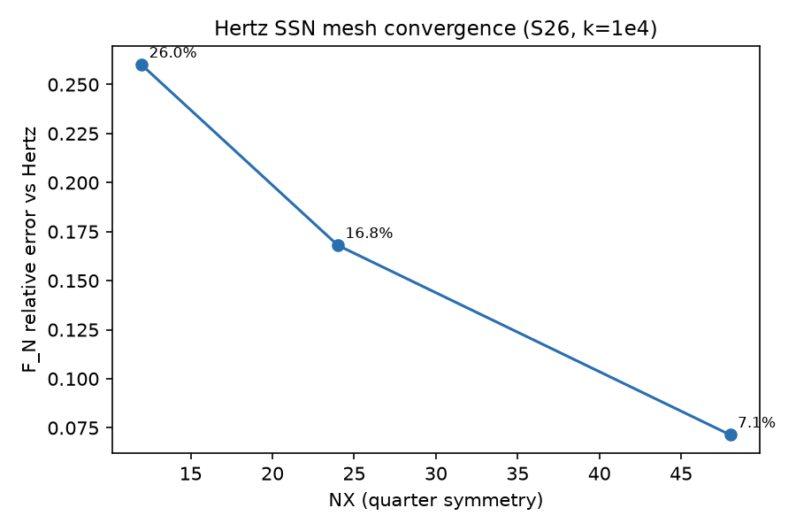
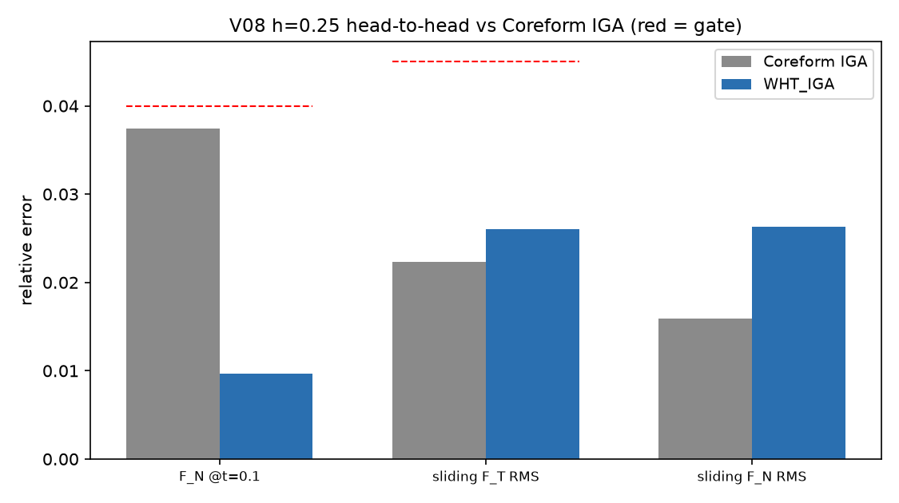

Generated (UTC): 2026-11-17T17:44:42+00:00 · Env: Python 3.12 (whtiga), Kratos 10.4.3 (E:/kratos-build/install)
Gates passing: 14/20 (PASS-B = cited from parallel session, see source).
| ID | Case | Gate | Status | Evidence | Source |
|---|---|---|---|---|---|
| V01 | prescribed-displacement cube | 1e-5 analytic | PASS | G2 p=1~3 table | G2_COMPLETE |
| V02 | Roark plate | peak <=1%, local 0.2% | PASS | 0.674%, Abaqus 0.031% | G2_COMPLETE |
| V03 | beam bending (5 loads) | 5% | PASS | 0.6-0.8% (G3-01) | G3 suite 9/9 |
| V04 | bimetallic beam | 5% + merge-tie 1e-6 | PASS | G3-02 | G3 suite 9/9 |
| V05 | multiplanar interfaces | monolithic parity | PASS | G3-03 | G3 suite 9/9 |
| V06 | pressurized sphere | CSV per-cell tol | PASS | L0-L2 x p1-3 | G2_COMPLETE |
| V07 | Kirsch nu=0.49999 | Hard Gate + Target | BLOCKED | needs C++ MixedUP0 | master-plan Phase 5 |
| V08 | Hertz-Coulomb indenter | F_N 4%, sliding F_T 4.5% | PASS-B | R1 +0.97%, R2 2.63/2.60% @h=0.25 | S32 (parallel track) |
| V09 | cantilever shock/vibration | 1% / RMS | PENDING | G4 running | test_p4_gate_g4 |
| V10 | vibrating beam (Bossak) | doc basis | PENDING | G4 running | test_p4_gate_g4 |
| V11 | NAFEMS p18-t1 thermal | 4% | PENDING | G4 running | test_p4_gate_g4 |
| V12 | NAFEMS t2/t3/t4 | 1%/2%/3% | PASS-B | T2 +0.0008%, T3 p2 +0.14%, T4 p2 -1.15% | G4_report (parallel) |
| V-EXP | 1D elastic wave (explicit) | 2% | PASS | tip L2 <2%, arrival +-0.03 | TRACK2_COMPLETE |
| V-EXP-C | two-block impact | mom 1e-6, E 2% | PASS | mom 1e-15, E 0.18/0.26% | TRACK2_COMPLETE |
| V-COND | condition number | split decision | PASS | V-COND-split flat+slope | G2_COMPLETE |
| E01 | thin plate + hole | Coreform-level | PASS | G3-05 | G3 suite 9/9 |
| E02 | adaptivity plate | trend match | PASS | G3-06 | G3 suite 9/9 |
| E03 | glass-to-metal seal | convergence + qualitative | PASS-B | 13-cell STEP + 3-step, S33 | S33 (parallel track) |
| E04 | Cook membrane | u_y 1% | BLOCKED | traction 191.5N reading; stock TL 69% low | S27 (C++ U/P needed) |
| E05 | door-lock assembly | RF3 5% | PENDING | not started | - |




Read: F_N win (0.97% vs 3.74%). F_T RMS within gate but behind (2.60% vs 2.23%) — friction sliding refinement is next.
All formats generated from one executed Kratos solve
(export_bulk_bar_evidence):
vtkhdf,
vtu,
msh (Gmsh),
fem (Nastran bulk = OptiStruct-readable),
stl,
png contour.
hvascii has no writer in-repo or in meshio and is explicitly out of scope.
{
"g3": {
"path": "D:/PythonCodeStudy/CAD-CAE-COPILOT/WHT_IGA/docs/phase3/g3_measurements.json",
"keys": [
"benchmarks",
"suite"
]
},
"g4": {
"path": "D:/PythonCodeStudy/CAD-CAE-COPILOT/WHT_IGA/docs/phase4/g4_measurements.json",
"keys": [
"V09",
"V10_MODERATE_DISSIPATION",
"V10_TRANSIENT_FIDELITY",
"V11",
"V12_T2",
"V12_T3_p1",
"V12_T3_p1_n20",
"V12_T3_p1_n40",
"V12_T3_p2",
"V12_T4"
]
}
}
Full evidence: S26-S36, TRACK2/3/H_COMPLETE, G2_COMPLETE, g3/g4_measurements.json.